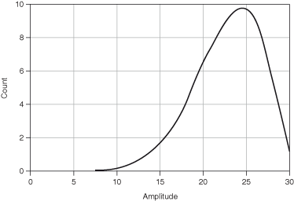

Skewness is a measure of symmetry and corresponds to the third-order moment.
A negative value of skewness indicates that the left side of the probability density function is longer than the right side. A positive value of skewness indicates that the right side of the probability density function is longer than the right side.
The following figure shows negative skewness.
The following figure shows positive skewness.